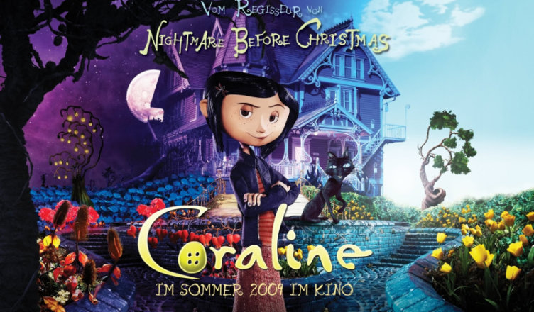

Nome: Coraline
Data de Lançamento: 2009
Genero: Aventura/Fantasia
Duração: 1h 40m
Qualidade: 1080p
Idioma: Dublado (Portugues Brasil)
Sinopse: Enquanto explora sua nova casa à noite, a pequena Coraline descobre uma porta secreta que contém um mundo parecido com o dela, porém melhor em muitas maneiras. Todos têm botões no lugar dos olhos, os pais são carinhosos e os sonhos de Coraline viram realidade por lá. Ela se encanta com essa descoberta, mas logo percebe que segredos estranhos estão em ação: uma outra mãe e o resto de sua família tentam mantê-la eternamente nesse mundo paralelo.